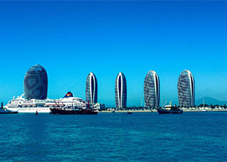
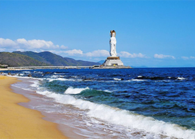

三亚交通
三亚凤凰国际机场
起步价格5元2公里，2公里后每公里2元，超出市城区20公里以上回程空驶费每公里1元，等候费每10分钟2元。三亚机场－三亚湾，费用约40元，行车15分钟左右； 三亚机场－大东海，费用约50元，行车15--20分钟； 三亚机场－亚龙湾，费用约120元，行车30--40分钟； 市区大东海－三亚湾，打表，最多15--20分钟； 市区大东海－亚龙湾，费用约60元，行车25--35分钟； 亚龙湾内，费用10元，5分钟内搞定； 市区内，打表，5--10元。
*温馨提示：在您所乘坐的出租车，车窗两侧应贴有收费标准收费办法，和出租车汽车驾驶员服务监督卡，敬请您记住。
三亚火车站
三亚
三亚汽车站
三亚车站 三亚西站
三亚公交热门车站
八一中学 中医院 布带村 槟榔河景区 槟榔村口 滨海路 碧海蓝天小区 碧海蓝天 宝宏酒店 半山半岛 301医院 奥射中心奥林匹克射击中心 安游路口 安游 安罗村 爱心大世界 ZF二办 4802工厂
三亚图册
